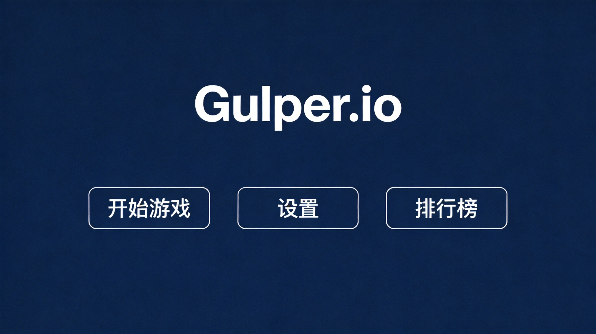
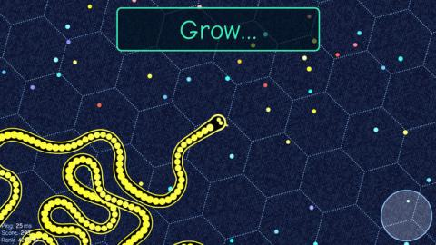
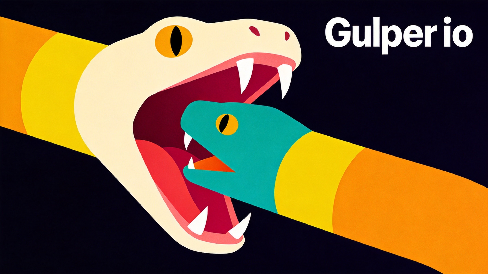
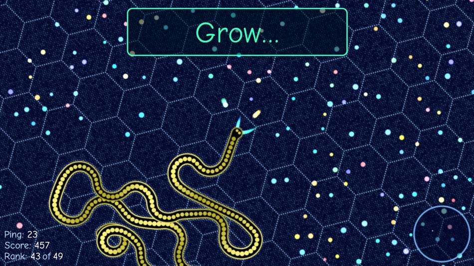

Gulper.io drops you into a colorful, chaotic arena where your goal is brutally simple: eat everything smaller than you and avoid anything bigger. Sounds easy, right? Trust me, it's not. I've spent countless hours getting chomped by surprise attacks and learning why bigger isn't always safer. This guide will save you from the mistakes I made.
🎯 Game Basics

What Is Gulper.io?
Gulper.io is a browser-based .io game where you control a creature with a massive mouth. The whole point is swallowing food pellets and smaller creatures to grow. The arena's full of colorful chaos—glowing orbs, rival players, and plenty of ways to meet your demise.
The Growth System
Your size is everything here. You need to be at least 15% larger than another player to eat them. Sounds like a lot, but growth happens fast once you get rolling. Here's what fills you up:
- Green pellets - The bread and butter of growth. They're everywhere and safe to eat.
- Blue orbs - Worth more than green pellets. Grab these when you spot them.
- Golden orbs - Rare and valuable. They'll give your size a nice bump.
- Other players - If they're smaller, you can swallow them whole.
Game Modes
Gulper.io offers a few different ways to play. Solo mode is every creature for itself. Team mode lets you play with others, which changes the strategy completely. There's also a King of the Hill variant where you capture zones for bonus points.
🎮 Controls & Mechanics

Movement
Your creature follows your mouse cursor. Move it in any direction and your gulper slides toward that point. The further away your cursor is from your creature, the faster you move. This is crucial—you can outrun opponents by positioning your cursor strategically.
The Mouth Mechanic
Here's the thing about Gulper.io: only creatures that fit inside your mouth count. You can't just bump into something and eat it. Your mouth has to actually engulf the target. This makes positioning absolutely everything.
Speed Boost
Hold the Spacebar to get a temporary speed boost. It's useful for escaping predators or catching prey, but drains your size slightly. Use it wisely—don't waste your boost chasing something that might not be worth it.
Bigger creatures move slower. A tiny gulper can easily circle around a massive one and snap it up. Don't get cocky just because you're the biggest on the server.
🌱 Beginner Strategies
1. Stick to the Edges (At First)
The map borders are your friend when you're small. There's less ground to cover, fewer places for predators to hide, and you'll encounter fewer huge creatures. Just don't get trapped—bigger players can still corner you.
2. Watch the Leaderboard
See those names at the top? Keep an eye on them. If the #1 player suddenly drops off the board, they either disconnected or got eaten. Either way, the creature that killed them just got massive. Avoid that area.
3. Don't Be Greedy
I can't tell you how many times I've chased a small pellet cluster right into a predator's path. The trick is: if something feels too risky, it probably is. Green pellets aren't worth dying over.
4. Know When to Retreat
Here's a situation that happens constantly: you're chomping along, feeling confident, then a shadow falls over you. Big player incoming. Run. Don't try to fight, don't try to trick them—just go. You can rebuild that size in minutes.
⚡ Intermediate Tactics
1. Predict and Intercept
Instead of chasing creatures directly, aim for where they're going. Creatures in Gulper.io move predictably toward the cursor. If someone is fleeing in a straight line, cut them off. You'll catch them before they realize what's happening.
2. Use Obstacles
The arena has various obstacles—rocks, coral formations, whatever. Use them! A larger creature chasing you might not fit through tight spaces. Smaller gulpers can slip through gaps that stop bigger players cold.
3. The Surprise Approach
Ambush tactics work great. Position yourself near a pellet cluster or behind an obstacle. When smaller creatures come to feed, snap them up. The key is staying still and patient—you'll get way more catches this way than by actively hunting.
4. Boost Strategically
Save your speed boost for moments that matter: escaping a close call, catching a fast runner, or crossing the map quickly. Constantly boosting makes you predictable and wastes your size advantage.
🚀 Advanced Techniques
1. The Spiral Approach
For creatures slightly larger than you: don't chase head-on. Instead, spiral around them. You're faster, so you can position yourself at their side or behind them. Eventually they'll be inside your mouth radius. It's satisfying every time.
2. Split and Conquer (Team Mode)
In team mode, coordinate with teammates. If you're both chasing the same target, approach from different angles. Confused prey makes mistakes. Also, bigger teammates should protect smaller ones—a coordinated team is nearly unstoppable.
3. The Hunger Game
Sometimes you need to let yourself shrink a bit. If you're surrounded by bigger players, using your boost to escape will cost you some size anyway. Deliberately eat some of your own mass to become faster and more maneuverable. Then rebuild once you're in safer waters.
4. Map Control
Advanced players control territory. If you're dominating, push other creatures toward the edges and claim the center. The center has better pellet density. Just remember: the bigger you get, the more of a target you become.

💎 Pro Tips
Check the minimap constantly. It's easy to get absorbed in chasing one target and miss the five other creatures converging on you. The minimap shows threats approaching from all directions.
Play during off-peak hours. Less competition means easier climbs up the leaderboard. Early mornings UTC tend to be quieter, and you might even get a private server.
Don't ignore the little guys. Small creatures add up. A dozen green pellets might equal one player worth of mass. Always be eating something.
Size isn't everything. I've seen tiny gulpers take down massive ones by outmaneuvering. Speed, positioning, and patience beat raw size every time.

❓ Frequently Asked Questions
How do I eat other players in Gulper.io?
You need to be at least 15% larger than the other player. Position yourself so the smaller creature fits entirely inside your mouth opening, then they'll be swallowed. Just bumping into them isn't enough.
Does the speed boost cost anything?
Yes, using the speed boost (Spacebar) causes you to shed a small amount of mass. It's usually worth it for escapes or crucial catches, but don't spam it constantly.
What's the best starting strategy?
When you spawn, immediately head to a pellet-rich area and start eating. Build up your size before venturing into the open. The first 30 seconds determine whether you'll thrive or struggle.
How do I escape from bigger players?
Move toward obstacles and tight spaces where bigger creatures can't follow. You can also use your speed boost to create distance. Never try to outrun them directly—they'll catch up eventually.
Are there any differences in team mode?
You can't eat teammates in team mode, obviously. Strategy shifts toward coordination—you should protect smaller teammates and communicate about threats. Larger team members can absorb hits that would kill smaller ones.
What happens when I die?
When you're eaten, you respawn as a small creature at a random location. Everything you've built disappears. That's why playing safe is so important—losing a massive creature hurts way more than starting fresh.
📝 Related Games to Try
If you enjoy Gulper.io, you might also like Slither.io for a snake-like eating experience, Agar.io the original cell-eating game, or Diep.io for tank-based combat action.
📝 Conclusion
Gulper.io is deceptively simple but rewards smart play. Position yourself well, don't get greedy, and always keep an eye on threats. The leaderboard is full of players who made fewer mistakes than the rest. Now you know how to be one of them.
Jump in and start gulping! Good luck out there, and remember: everything eats, everything gets eaten.
Last updated: January 20, 2024
Written by the iogameguide.com team